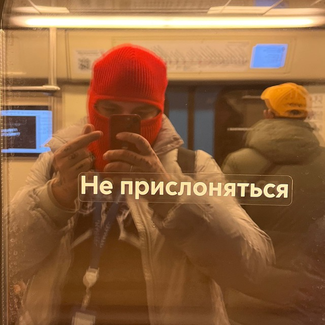

Гавров Никита — Портфолио
Гавров Никита
Фотограф & Продюсер
Создаю визуальную часть вашего бренда. Специализируюсь на продюссировании и создании коммерческой фотографии. Сочетаю четкий менеджмент съёмочного процесса и творческий подход к вашему продукту.

Кейсы и проекты
Съемка для бренда одежды "Concept"
Задача
Разработать концепцию и отснять лукбук новой коллекции. Важно было подчеркнуть премиальное качество ткани и фактуру материалов при жестком студийном свете.
Путь решения
Организован кастинг моделей, подобрана студия с циклорамой. Использована схема с глубокими тенями и акцентными бликами, чтобы передать объем и геометрию кроя.
Итог
30 готовых кадров для каталога и баннеров, запуск рекламной кампании в срок, рост конверсии карточек товара на 25%.